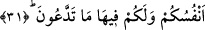

31. Biz dünya hayatında da âhirette de sizin dostlarınızız. Orada sizin için
canlarınızın çektiği her şey var ve istediğiniz her şey orada sizin için hazırdır.
“Biz” bütün işlerinizde sizin yardımcılarınızız, size hakkı ilhâm eder ve şeytanların
kâfirlere yaptıklarının aksine, sizi hayır ve iyiliğiniz olan şeylere irşâd ederiz.
Kâfirlerle onlara sardırılan kötü arkadaşlar arasında düşmanlık ve tartışma yaşandığı
zaman biz size şefâat eder ve sizi iyilikle istikbal ederiz.
Bu da dünyada müminlere verilen müjdeler cümlesindendir. Biz melekler, işlerinizde
size yardımcılar olarak hakkı ilhâm ediyor; şeytanların kâfirleri saptırıp ifsâd
etmelerine mukabil biz de sizi hayır ve iyiliğiniz olan hususlara irşâd ediyoruz. Bu
durum zaten tâat ve itâate müdâvim olan müminlerin kalplerine ilham yoluyla gelen
şeylerdir. Tabiî ki melekler vâsıtasıyla Allah Teâlâ müminleri teyid edip onlara
muvaffakiyet ihsan etmektedir.
Cafer (r.a.) şöyle der: “Her kim amellerinde sevap ve daha birtakım maksadlar
mülâhaza ederse onun dostu melekler olur, her kim de amellerini Allah’ın müşâhedesi
üzere yaparsa onun dostu da Mevlâ Teâlâ’dır. Zîrâ Bakara sûresi 257. âyette “Allah
inananların dostudur” buyrulmaktadır.”
“Dünya hayatında da âhirette de sizin dostlarınızız.” Yani kâfirlerle onlara
sardırılan kötü arkadaşlar arasında husûmet, düşmanlık ve faydasız tartışmalar
yaşandığı sırada biz size şefâat edecek; imdâdınıza yetişecek ve sizleri lutuf ve iyilikle
karşılayacağız.
Burada genel olarak müminlere/avam rahmet dostluğu; has ve seçkin kullara nusret ve
yardım dostluğu; en zirve noktada Allah’ın mümtaz ve seçkin kullarına da muhabbet
dostluğu sunulacaktır. Allah müminlerin geneline sunulan rahmet dostluğu ile onları
dünyada şerîati yaşamaya muvaffak kılar; âhirette de onları ödüllendirir. Has kullara
sunulan nusret ve yardım dostluğu ile dünyada onları en azılı düşmanları nefsi
emmârelerine hükümran kılıp bu şekilde nefislerini kötü ahlâktan ve bayağı
niteliklerden arındırır.
Âhiret hayatında ise “Ey huzûra eren nefis! Sen Rabbinden Rabbin de senden
hoşnut olarak Rabbine dön” (el-Fecr 27-28) cezbesiyle mukabele etmesidir. En ileri
ve en üstün durumda olan mümtaz şahsiyetlere muhabbet dostluğuyla dünyada onlara
keşif ve müşâhede kapılarını açar. Âhirette ise onları mânen kendi zâtına yaklaştırıp
cemalini seyretme zevk u safâsına kavuşturur. Allah Teâlâ’nın hata ve kusurları
bağışlaması da O’nun dostluğunun gereğidir. Zîrâ dostun hatası dosta ağırlık vermez.
Bâyezîd Bistâmî (k.s.) bir yolda yürümekteydi. Kalabalığın sesini işitti ve ne
olduğunu bilmek istedi. Oraya ulaştığında küçük bir çocuğun siyah bir bataklığa düşmüş
olduğunu gördü. İnsanlar da durmuş seyrediyordu, ansızın bu çocuğun annesi koşarak
geldi ve kendisini bataklığın içine attı. Çocuğunu bataklıktan çıkardı ve alıp gitti.